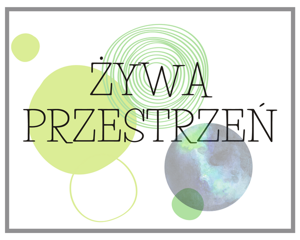
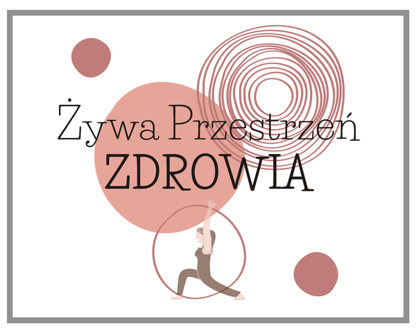
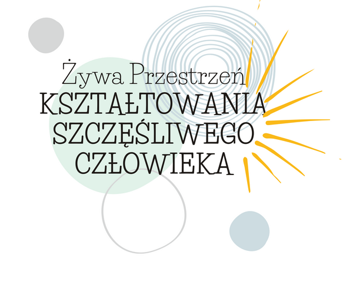

Tworzenie żywej przestrzeni. Współpraca z przyrodą. Permakultura. Słów kilka o pozytywnej roli człowieka w przyrodzie. O tym co możemy zrobić sami, już teraz. Dla siebie i planety.

ŻYWA PRZESTRZEŃ ZDROWIA
CEL - PEŁNIA ZDROWIA

Inicjatywa Fundacji dotycząca psychologii samororozwoju oraz wychowania. To strefa świadomego człowieka, który, jako rodzic, opiekun, nauczyciel, ma misję ukształtowania szczęśliwego człowieka - swojego dziecka.
Jednym z celów statutowych Fundacji jest wspieranie edukacji domowej. Realizujemy to poprzez wsparcie merytoryczne i metodyczne rodzin, współpracę ze szkołami w celu wypracowania standardu szkół przyjaznych Edukacji Domowej